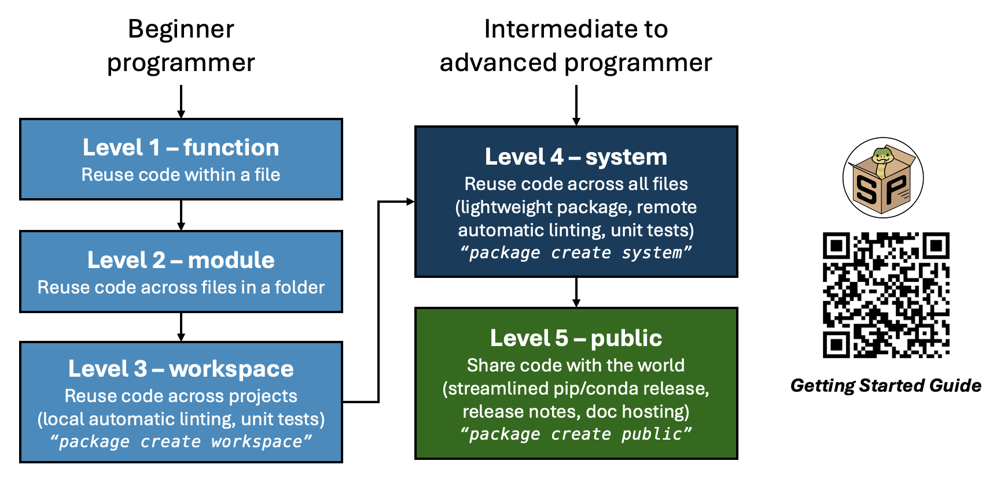

Welcome to Billinge Group’s Python scikit-package documentation!
scikit-package offers tools and practices for the scientific community to make better and more reusable Scientific Python packages and applications.
How does scikit-package benefit scientists?
scikit-package offers step-by-step instructions for reusing and sharing code, starting from something as simple as defining and using functions, all the way to maintaining and releasing a fully documented open-source package on PyPI and conda-forge.
Here are the 3 goals of scikit-package for the scientific community:
We help scientists share scientific code to amplify research impact.
We help scientists save time, allowing them to focus on writing scientific code.
We offer best practices from the group’s experience in developing scientific software.
Here is an overview of the five levels of reusing and sharing code and the key features of scikit-package:
{kind=link}

The steps are divided into five levels of shareability and complexity, allowing users to choose the level that best suits their current needs. Code can be moved to higher levels as necessary.
Level 1,
function, which is already widely used, consists of simply defining functions within the same file or module.Level 2,
module, expands on Level 1 by reusing functions across separate module files within the same directory.Level 3,
workspace, restructures the organization so that a block of code can be reused across multiple projects.Level 4,
system, enables users to create a lightweight package so that the code can be reused across all files locally.Level 5,
public, is the final step, where the source code is uploaded online so that anyone in the world can install the package, sourced from PyPI or conda-forge.
Who are using scikit-package?
The full list of packages is as follows:
How do I get started?
Please visit the Getting started page to learn how to navigate the documentation!
What are the full benefits when I reach Level 5?
Set up local and remote
pre-commithooks to automate linting of code for PEP8, PEP256, static files such as.json,.yml, and.md, as well as spelling checks.Use GitHub
tagsto trigger PyPI/GitHub releases, documentation hosting, and CHANGELOG updates with a single command.Generate
Codecovreports for each GitHub pull request (PR).Start with a comprehensive
README.rsttemplate containing badges, installation instructions, support, and contribution guides for your GitHub repository.Host documentation with a public URL using a rich
Sphinxdocumentation template with live rendering, including API documentation and examples on how to use the documentation.Ensure compatibility with the latest Python versions, adhering to SPEC0.
Verify whether a news file is included for each PR, which will later be used to generate the CHANGELOG during the release process.
For technical users, here are some of the advanced features:
Namespace package support, e.g.,
import diffpy.utils.Generate conda-package
meta.yamlwithpackage create conda-forge.Support headless GitHub CI testing for GUI applications.
Support non-pure Python package releases with
cibuildwheel.Reusable GitHub Actions workflows located in Billingegroup/release-scripts.
How do I receive support?
If you have any questions or have trouble, please read the Frequently asked questions (FAQ) section to see if your questions have already been answered. If there aren’t answers available, please create GitHub Issues.
How can I contribute to scikit-package?
Do you have any new features? Please make an issue via the GitHub issue tracker for further discussions. For a minor typo or grammatically incorrect sentence, please make a pull request. Before making a PR, please run pre-commit run --all-files to ensure the code is formatted.
Acknowledgements
The Billinge Group’s scikit-package has been modified from the NSLS-II scientific cookiecutter: https://github.com/nsls-ii/scientific-python-cookiecutter
Table of contents
- Getting started
- (Level 1-3) Reuse your scripts across files and folders without install
- (Level 4) Start a lightweight Python package (Recommended)
- Overview
- Prerequisites
- Install
scikit-packagewith conda - Initiate a project with
scikit-package - Check folder structure
- Install your package locally
- Run tests with your locally installed package
- Create a new project on GitHub
- Trigger pre-commit hooks automatically with Git commit
- Push your code to the remote GitHub repository
- Create a pull request from
skpkg-projtomain - Setup pre-commit CI in GitHub repository for public repository
- Merge the pull request
- (Optional) How to develop your code moving forward
- What’s next?
- (Level 5) Start a full Python package ready for public release
- Overview
- Prerequisites
- What’s the difference between Level 4 and Level 5?
- Create a new project with
scikit-package - Install
scikit-packagewith conda - Go to your project directory
- Migration code from Level 4 to Level 5
- Build documentation locally
- Upload your code to GitHub
- Setup Codecov token for GitHub repository
- Add news items in your pull request
- Build API reference documentation
- Ready for public release?
- Release package to GitHub and PyPI
- Overview
- PyPI/GitHub release
- Instructions for Project Owner for PyPI/GitHub release for the first time
- Release your package for PyPI/GitHub release after pre-release
- Release conda-forge package
- Appendix 1. Setup
PYPI_TOKENto allow GitHub Actions to upload to PyPI - Appendix 2. Setup
PAT_TOKENto allow GitHub Actions to compileCHANGELOG.rst - Appendix 3. Host documentation online with GitHub Pages
- Create conda package
- I already have a conda-forge feedstock. I want to release a new package version. How do I do that?
- I am new to conda-forge. How do I create a conda package?
- 4. Use the conda-forge feedstock to release a new version
- Appendix 1. How do I do pre-release?
- Appendix 2. Add a new admin to the conda-forge feedstock
- Appendix 3. Background info on
meta.yml
- Migrate your existing package with
scikit-package - Frequently asked questions (FAQ)
- License
- Release Notes